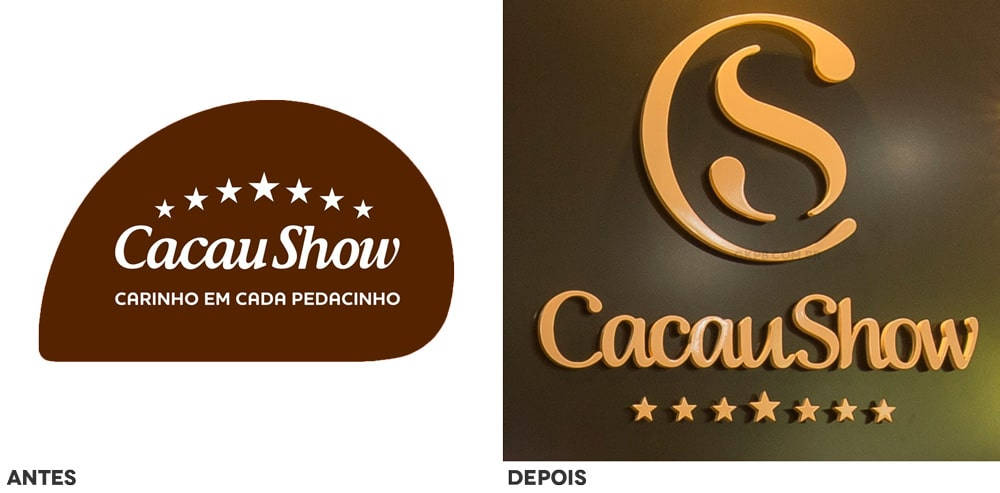

Contato
Canais de comunicação
Estamos aqui para ouvir você! Se tiver dúvidas, sugestões ou quiser saber mais sobre nossos produtos e serviços, entre em contato conosco através dos canais abaixo. Nossa equipe está pronta para atendê-lo da melhor maneira possível.
- Telefone: (11) 3526-9854
- Redes Sociais: Facebook, Instagram, Twitter
- E-mails: contato@cacaushow.com.br
- Site Oficial: www.cacaushow.com.br
- Atendimento ao Cliente: Telefone 0800-11-2858, Chat online disponível no site
Visite uma de nossas lojas ou entre em contato diretamente para experienciar o mundo delicioso da Cacau Show!
A comunicação empresarial na Cacau Show
A Cacau Show utiliza uma combinação de fluxos comunicacionais verticais, horizontais e informais para garantir uma comunicação eficaz e abrangente dentro da organização. O fluxo vertical é predominantemente descendente, facilitando a disseminação de informações estratégicas e operacionais dos gestores para os funcionários. No entanto, o fluxo ascendente também é incentivado através de canais de feedback, permitindo que os colaboradores compartilhem suas ideias e preocupações com a liderança. A comunicação horizontal ocorre entre os departamentos para promover a colaboração e a coordenação entre equipes.
Internamente, a Cacau Show utiliza uma variedade de canais de comunicação, incluindo e-mails corporativos, reuniões presenciais e virtuais, intranet, murais de avisos e aplicativos de mensagens instantâneas. Externamente, a empresa mantém uma comunicação ativa com seus clientes e parceiros através de redes sociais, e-mails marketing, site oficial, e atendimento ao cliente via telefone e chat online.
Entre os problemas comunicacionais identificados estão a sobrecarga de informações e a falta de clareza em algumas mensagens, o que pode levar a mal-entendidos e a diminuição da eficiência. Para enfrentar esses desafios, a empresa adotou soluções como a padronização dos processos de comunicação, treinamento contínuo em habilidades de comunicação para os colaboradores e a implementação de ferramentas tecnológicas que facilitam a troca de informações de maneira mais organizada e acessível.
Infográfico
1988: Fundada por Alexandre Costa
Início: Venda de ovos de Páscoa artesanais
Crescimento: Maior rede de chocolates finos do mundo
Trufas: Diversidade de sabores
Chocolates Premium: Cacau de alta qualidade
Ovos de Páscoa: Edições especiais
Linha Fit: Menos açúcar, sem lactose
Lojas: Mais de 2.300 no Brasil
Exportação: Para diversos países
Sustentabilidade: Programas sociais e cadeia produtiva do cacau
Cacau sustentável
Premiações no setor
Inovações em sabores e embalagens